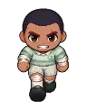
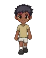
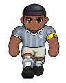
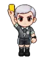
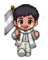
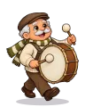
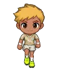

Wiki › Items › Chests, tokens and trophies › Forgotten Ticket

Forgotten Ticket
Material / find Rare
A yellowed ticket from the Origin Cup, the final that never ended. Seu Saudade, kit manager of the Forgotten Stadium, trades tickets for pieces of the Forgotten Uniform.
- Type
- Material / find
- Rarity
- Rare
Where it comes from
Dropped by (12)
| Opponent | Level | AmountQty | Chance | Where |
|---|---|---|---|---|
 Eternal Sub | 705 | 1 | 2.5% | 👕 Abandoned Locker Room |
| Sleepwalking Masseur | 722 | 1 | 2.5% | 👕 Abandoned Locker Room |
 Lightning Ball Kid | 740 | 1 | 2.5% | 👕 Abandoned Locker Room |
 Brick-Wall Defender | 770 | 1 | 2.5% | 🚦 Players’ Tunnel |
| Offside Linesman | 790 | 1 | 2.5% | 🚦 Players’ Tunnel |
 Forgotten Referee | 812 | 1 | 2.5% | 🚦 Players’ Tunnel |
 Mist Crowd | 838 | 1 | 2.5% | 📣 Infinite Stands |
 Thunder Drum | 860 | 1 | 2.5% | 📣 Infinite Stands |
| 884 | 1 | 2.5% | 📣 Infinite Stands | |
 Trophyless Star | 906 | 1 | 2.5% | ⚽ Eternal Final Pitch |
| Thousand-Save Keeper | 924 | 1 | 2.5% | ⚽ Eternal Final Pitch |
| Voiceless Coach | 942 | 1 | 2.5% | ⚽ Eternal Final Pitch |
Quest reward
- 🎟️ The yellowed ticket (Level 700)
- 🎟️ The oldest fan (Level 700)
- 👻 The team that never left the bench (Level 705)
- 👻 The ball that ran away (Level 725)
- 👻 The rule book (Level 740)
- 🏆 The Locker Room Captain (Level 755)
- 👻 The zero-to-zero team (Level 765)
- 👻 The whistle of the final (Level 792)
- 👻 Offside! (Level 805)
- 🏆 The Tunnel Sheriff (Level 825)
- 👻 The fans who never stopped (Level 835)
- 👻 The lost flag (Level 864)
- 👻 Flag up high (Level 880)
- 🏆 The King of the Stands (Level 895)
- 👻 Almost there (Level 905)
- 👻 The lineup for the final (Level 925)
- 👻 Extra time (Level 940)
- 🏆 The Star of the Final (Level 948)
- 🏆 The final of the Forgotten Eleven (Level 950)
- ✨ The ball of the final (Level 710)